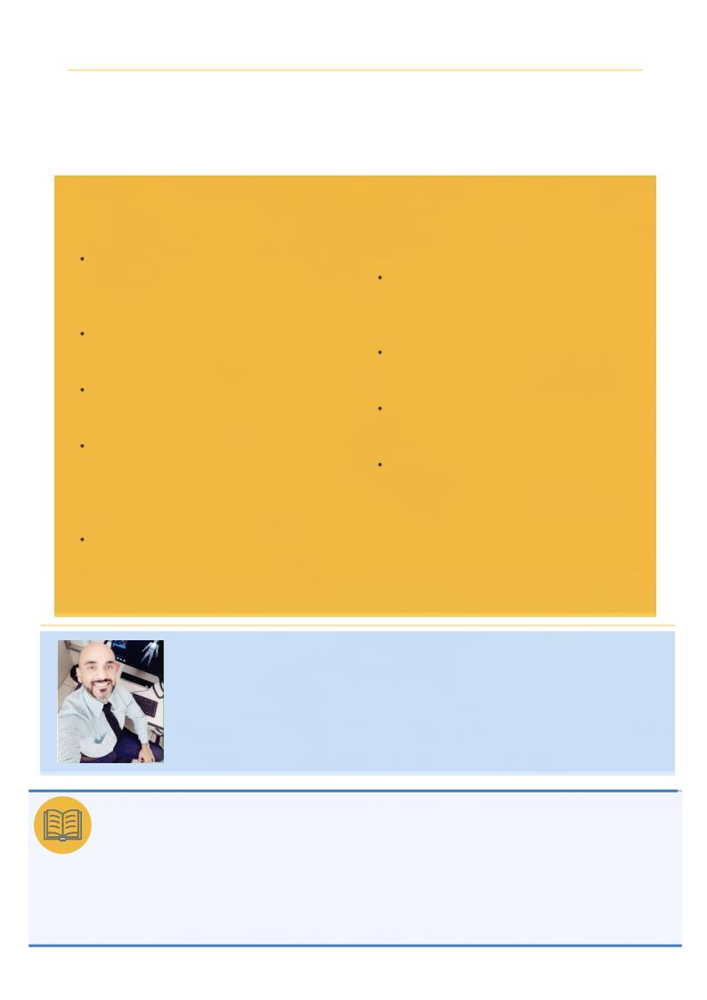

No âmbito da docência: sugestão de plano de
ação para COREDs
Parceria dos CRTRs com programas de pós-
graduação e cursos de especialização para
formação
pedagógica
de
docentes
de
radiologia
Inserção
de
disciplina
de
didática
nas
matrizes
curriculares,
ministrada
por
profissional licenciado em Pedagogia
Cursos de capacitação articulando docentes,
pedagogos e profissionais com experiência
clínica, coordenados pelos CRTRs
Articulação dos CRTRs com o CONTER e o
MEC
para
revisão
dos
referenciais
curriculares,
incorporando
letramentos
digital e midiático e competências para
atuação em ambientes mediados por IA
Aproximação
entre
as
COREDs
e
os
coordenadores
de
cursos
técnicos
e
superiores para discussões e alinhamentos de
interesse da categoria
No âmbito do mundo de trabalho: sugestões
para empresas, de acordo com suas próprias
realidades
Reserva
formal
de
carga
horária
para
treinamentos
supervisionados
em
novas
modalidades,
desvinculada
da
jornada
produtiva
Programas estruturados de integração do
recém-formado, com supervisão progressiva
por pares seniores
Reconhecimento da educação continuada
como critério de qualidade assistencial, não
apenas diferencial competitivo
Treinamentos internos com foco no cuidado e
na
comunicação
com
o
paciente,
considerando
suas
particularidades
e
vulnerabilidades
criticamente informações, utilizar tecnologias e inteligência artificial de maneira ética e segura, proteger
dados e imagens e adaptar-se às transformações do trabalho. Mais do que cumprir componentes
curriculares, formar significa desenvolver profissionais capazes de integrar conhecimento técnico,
experiência, pensamento crítico, competência digital e compromisso humano com o paciente. A seguir, são
apresentadas sugestões para o enfrentamento dos gargalos abordados.
É Doutor e Mestre em Mídia e Tecnologia pela UNESP, com estágio de pesquisa doutoral na
Queen’s University, Canadá (2024), como bolsista CAPES. É Técnico e Tecnólogo em
Radiologia, bacharel em Administração e possui pós-graduações em Docência no Ensino
Superior, Gestão e Auditoria em Saúde, Imaginologia e MBA em Gestão de Negócios e
Marketing. Atua na interface entre Radiologia, educação e tecnologia, com experiência
prática e educacional. Pesquisa impactos sociotécnicos da IA e tecnologias digitais, com
ênfase em softwares e sistemas algorítmicos. Pesquisador do LInDa e do Grupo Mídias
Digitais, Interatividade, Games e Educação (UNESP); revisor de periódicos, membro da
CORED e da Comissão de Comunicação do CRTR-SP (2026). É fundador e editor-chefe da
Editora Acadêmica Luhano Press.
ALÉM DA IMAGEM · CORED-SP · CRTR-SP
10
ALÉM DA IMAGEM · CORED-SP · CRTR-SP
1.Busby, J.S.; Coeckelbergh, M. The Social Ascription of Obligations to Engineers. Sci. Eng. Ethics 2003, 9, 363–376, DOI:10.1007/s11948-003-0033-x.
2.Conselho Nacional de Técnicos em Radiologia (CONTER). Resolução CONTER nº 15, de 12 de dezembro de 2011. Dispõe sobre a reformulação do Código
de Ética dos Profissionais das Técnicas Radiológicas. Revoga a Resolução CONTER nº 06, de 31/05/2006 e seu anexo; CONTER: Brasília, DF, 2011.
3.Tardif, M. Saberes Docentes e Formação Profissional; Vozes: Petrópolis, 2002.
4.Delors, J. Educação: Um Tesouro a Descobrir: Relatório para a UNESCO da Comissão Internacional sobre Educação para o Século XXI; UNESCO:
Brasília, 2010; 46 p.
5.Celestino, M.S.; Valente, V.C.P.N. Aristoi Radiológicos: Humanização, Plataformização e Fetichização Técnica na Formação dos Técnicos e Tecnólogos
em Radiologia. Revista Aracê 2026, 8, 1–20, DOI:10.56238/arev8n3-062.
6.Brasil. Lei nº 11.788, de 25 de setembro de 2008. Dispõe sobre o estágio de estudantes; Presidência da República: Brasília, 2008.
7.Conselho Nacional de Técnicos em Radiologia (CONTER). Resolução CONTER nº 10, de 11 de novembro de 2011. Regula e disciplina o Estágio Curricular
Supervisionado na Área das Técnicas Radiológicas. Diário Oficial da União, Brasília, 21 nov. 2011.
REFERÊNCIAS